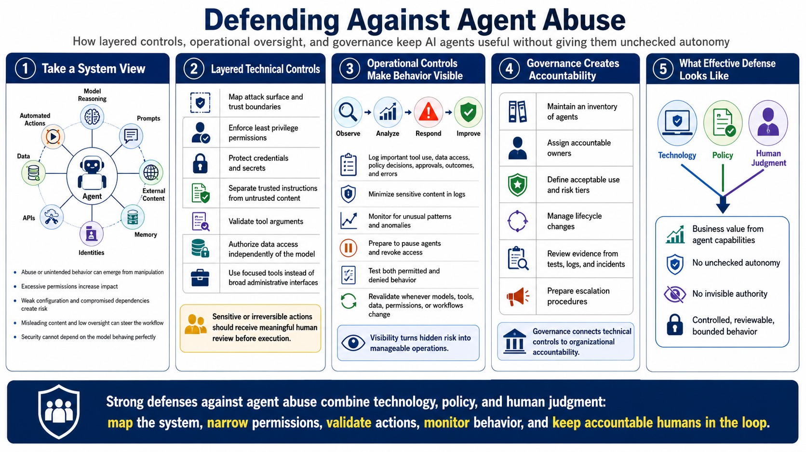

Defending Against Agent Abuse
Course Summary and Key Takeaways
Connecting to LMS... Progress: in progress
Version 1.0 | Date: 2026-06-21
This course provides educational information regarding defensive security controls for AI agents. It is not offensive security training, exploit development instruction, or legal advice.

Narration
Defending against agent abuse requires a system view. Agents combine model reasoning with prompts, external content, memory, identities, tools, APIs, data, and automated actions. Abuse or unintended behavior can emerge from manipulation, excessive permissions, weak configuration, compromised dependencies, misleading content, or workflows that provide too little oversight. Security cannot depend on the model behaving perfectly.
Layered technical controls reduce impact. Map the attack surface and trust boundaries, restrict permissions through least privilege, protect credentials, separate trusted instructions from untrusted content, validate tool arguments, authorize data access independently, and use focused tools rather than broad administrative interfaces. Sensitive or irreversible actions should receive meaningful human review before execution.
Operational controls make behavior visible and manageable. Log important tool use, data access, policy decisions, approvals, outcomes, and errors while minimizing sensitive content. Monitor for unusual patterns, prepare to pause agents and revoke access, test both permitted and denied behavior, and repeat validation whenever models, tools, data, permissions, or workflows change.
Governance connects these controls to organizational accountability. Maintain an inventory, assign owners, define acceptable use and risk tiers, manage lifecycle changes, review evidence, and prepare escalation procedures. Effective defenses combine technology, policy, and human judgment so agent capabilities can create business value without receiving unchecked autonomy or invisible authority.